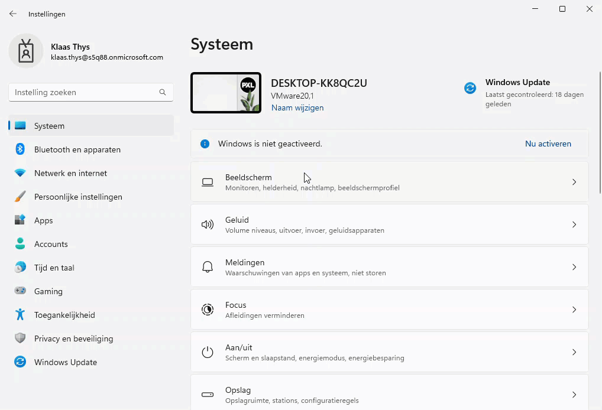
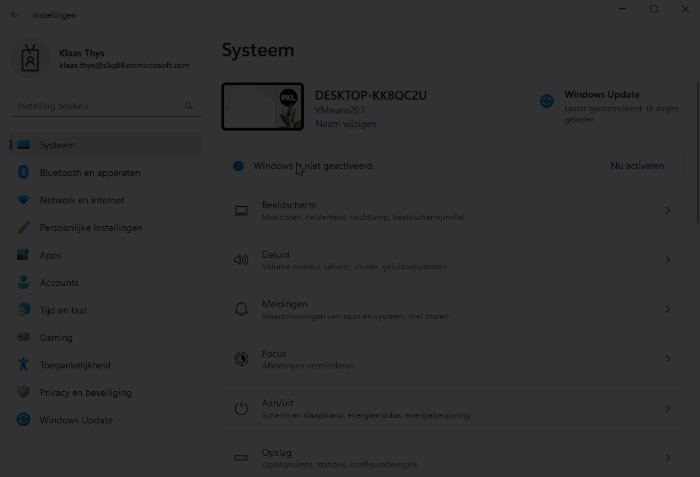

1. Windows Settings
De meeste systeeminstellingen van Windows vind je in Windows Settings. Zo open je ze:
1. Sneltoets: ⊞ Win + I
2. Startmenu:
- Open het Windows Start Menu.
- Typ Settings.
- Selecteer "Settings" of druk op Enter.
3. Windows Search
- Typ Settings in de zoekbalk van Windows.
- Selecteer "Settings" of druk op Enter.
2. Voorbeelden van Windows Settings
Hier zijn enkele Windows-instellingen die systeembeheerders vaak wijzigen of controleren.
2.1. Toetsenbordindeling
Je kan als volgt een toetsenbordindeling wijzigen of toevoegen:
- Selecteer in het hoofdmenu Time & Language.
- Klik op Language & Region.
- Klik naast je actieve taal op de drie puntjes (⋯) en kies Language options in het uitklapmenu.
- Klik op de knop Add a keyboard.
- Selecteer je gewenste toetsenbordindeling in de lijst.
- Verwijder eventueel ongewenste toetsenbordindelingen.

2.2. Opslaggebruik
Je kan als volgt je lokale schijfopslag controleren en zien welke items de meeste ruimte innemen via Windows Settings:
- Selecteer in het hoofdmenu System.
- Kies Storage.
- Klik op Show more categories
Opmerking: het kan even duren voordat Windows het opslaggebruik per categorie berekent en weergeeft.
